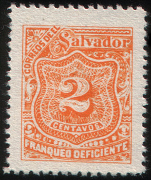
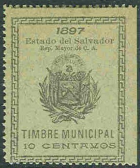
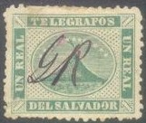

1 c red and 2 c red imperforate, usually these stamps are perforated
Return To Catalogue - Salvador 1867-1896
Note: on my website many of the
pictures can not be seen! They are of course present in the
catalogue;
contact me if you want to purchase it.
1 c red and 2 c red imperforate, usually these stamps are
perforated
1895 Colour olive 1 c 2 c 3 c 5 c 10 c 15 c 25 c 50 c 1896 Colour red 1 c 2 c 3 c 5 c 10 c 15 c 25 c 50 c 1897 Colour blue 1 c 2 c 3 c 5 c 10 c 15 c 25 c 50 c 1898 Colour violet 1 c 2 c 3 c 5 c 10 c 15 c 25 c 50 c 1899 Colour orange (without wheel overprint) 1 c 2 c 3 c 5 c 10 c 15 c 25 c 50 c 1899 Colour orange (with wheel overprint) 1 c 2 c 3 c 5 c 10 c 15 c 25 c 50 c

I've been told that these stamps are forgeries, I have no further
information.

Another lithographed forgery of th 2 c orange stamp.

Without sun overprint 1 c 2 c 3 c 5 c 10 c 15 c 25 c 50 c With additional sun overprint in violet 1 c 2 c 3 c
1 c green 2 c red 3 c orange 5 c blue 10 c brown 25 c green
1 c green and black 2 c red and black 3 c yellow and black 5 c blue and black 10 c violet and black
1 c green and black 2 c red and black 5 c blue and black 10 c violet and black
3 c yellow and black
1 c brown and black 2 c green and black 3 c orange and black 4 c red and black 5 c violet and black 12 c blue and black 24 c brown and black
10 c blue 10 c brown
Overprinted 'FRANQUEO OFICIAL' in ellipse (official stamp)

10 c blue (red overprint) 10 c brown
5 c green
Examples:
Reduced sizes
Reduced size, in this design (Columbus, issued 1892) I have seen:
1 c green, 2 c brown on blue, 5 c grey on blue, 10 c red, 10 c
brown on red, 20 c orange, 22 c blue on red.
Similar central design as the 1891 postage stamps on an envelope
issued in 1891 (however, the outer design is elliptic); I've seen
the values 2 c red, 10 c green and 22 c brown.
Besides the postage stamps overprinted with 'FRANQUEO OFICIAL' etc and the postage due stamps strongly resembling postage stamps (see there), also some other postage due stamps were issued. They are listed here.
2 c brown 3 c yellow 5 c blue 10 c red 12 c green 17 c violet 50 c brown 100 c lilac
2 c green 3 c orange
1 c green, 2 c brown, 3 c red, 7 c blue, 10 c orange, 25 c brown, 50 c grey, 100 c green, 200 c violet
1 c green, 2 c red, 3 c orange, 10 c brown, 25 c green
Examples:
(Reduced sizes)

In the above design (inscription '1899') I have
seen:
Without overprint: 1 c black
With '1901' overprint: 1 c black, 10 c orange, 25 c blue,
With '1902' overprint: 50 c green
With '1903' overprint: 50 c green.
In the above design (inscription '1904') I have
seen:
1 c black on grey ('Timbre para operaciones y documentos
diversos')
1 c black on yellow, 50 c black on yellow ('Timbre para cobro de
premios y de seguros')
5 c black on blue, 25 c black on blue ('Timbre para cancelacion
de contratos')
5 c black on lilac, 1 P green on lilac, 5 P blue on lilac
('Timbre para venta de mercaderias extranjeras')
5 c black on yellow ('Timbre para venta de aguardiente del pais')
'TIMBRE MUNICIPAL' with overprint '1918':
I have seen similr 'TIMBRE MUNCIPAL' stamps with the year 1909: 5 c red ('1909' placed higher); 1910: 5 c red ('1910' placed higher); 1918: 1 c, 5 c, 10 c, 25 c, 50 c, 1 P.

Exist in the values 1 r green, 2 r violet and 4 r red.
For postage stamps with overprint 'CONTRASELLO' in a circle, used as telegraph stamps, see under postage stamps.
In 1896 some large telegraph stamps with inscription 'TIMBRES PARA TELEGRAMAS' with arms were issued. The following values exist: 1 c red, 5 c green (two types), 10 c black on red, 10 c grey (2 types), 1 P blue and 10 p brown.
Some parcel stamps were issued in 1896. They have the inscription 'FAROOS POSTALES' and a picture of Mercury in the center. The values 5 c orange, 10 c blue, 15 c red, 20 c orange and 50 c green exist. Sorry, no picture available yet.
Some forged cancels made by the forger Fournier as they can be
found in 'The Fournier Album of Philatelic Forgeries'. I don't
know on which forgeries these forged cancels were used.
{kind=link}
{kind=link}